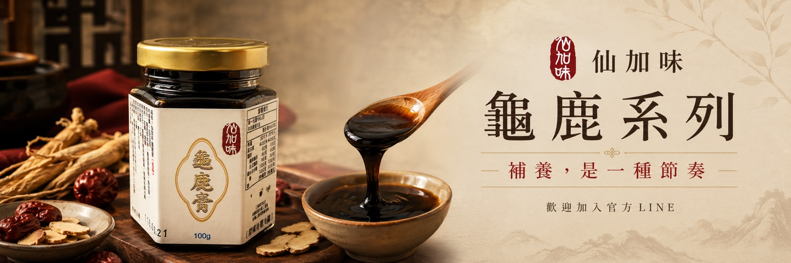

仙加味
把傳統龜鹿食補，整理成每天做得到的方式
仙加味從萬華出發，將鹿角、龜板與日常食材整理成膏、飲、湯塊、膠與粉等不同型態。先認識產品是什麼、用途方向在哪，再選擇適合自己生活的使用方式。
固定取用可看龜鹿膏、方便即飲可看龜鹿飲、沖泡燉湯可看龜鹿湯塊、傳統大規格可看龜鹿膠、自行調飲可看鹿茸粉。
萬華在地經營五大產品型態・六項產品規格官方 LINE 專人協助
產品用途方向
五大食補型態、六項產品規格
先看這款產品是用來固定取用、即飲、沖泡燉湯、大規格家庭安排，還是自行調飲；再比較規格、成分與使用方式。
用途方向
從平常怎麼使用，找到適合了解的產品
這裡的用途方向是指怎麼放進日常飲食與生活，不是疾病治療用途。
常見食補搭配
想同時了解兩種使用方式，可先看常見食補搭配，再透過 LINE 確認規格與活動。